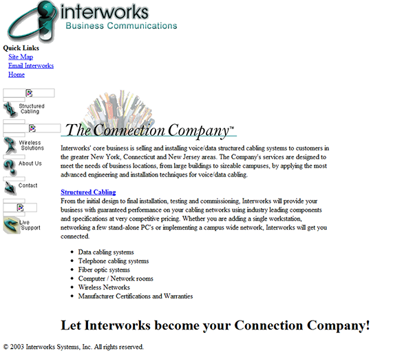
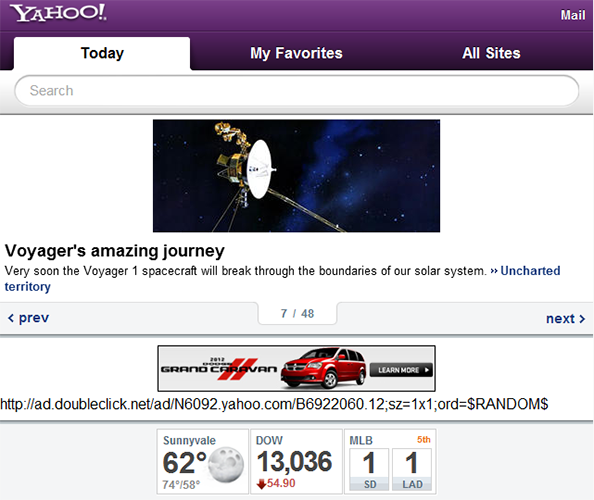
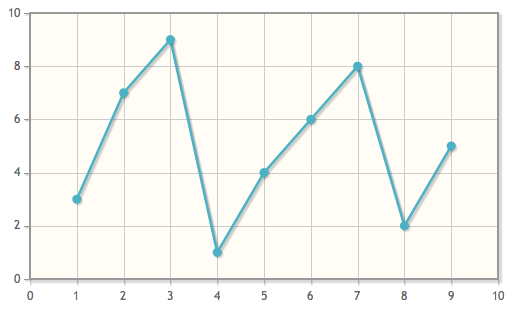
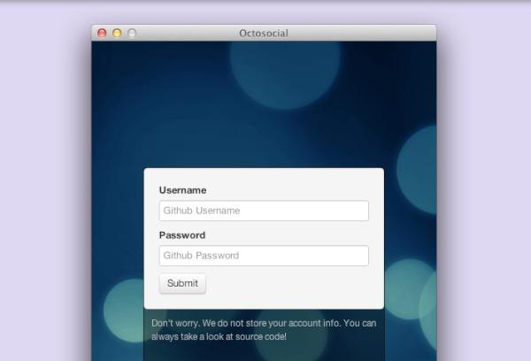

The Changing WWW
How nerds are creating the new final frontier
What we've seen

Old Interworks website
Current Day
Current Interworks website
A look into the future!
CSS3 - Allow mobile & desktop
CSS3 - Allow mobile & desktop

CSS3 - Cool animations
CSS Button
Rotating Text
S
calable
V
ector
G
raphics
Scaled Images
Visualize Data

WebGL & Canvas
Mobile & Desktop Apps
One ring to rule them all
Mobile Apps
Only have to make it once
Desktop Apps

Only have to make it once
Concluding...
Mark Gardner @ InterWorks
Twitter: mgardner85
mark.gardner@interworks.com